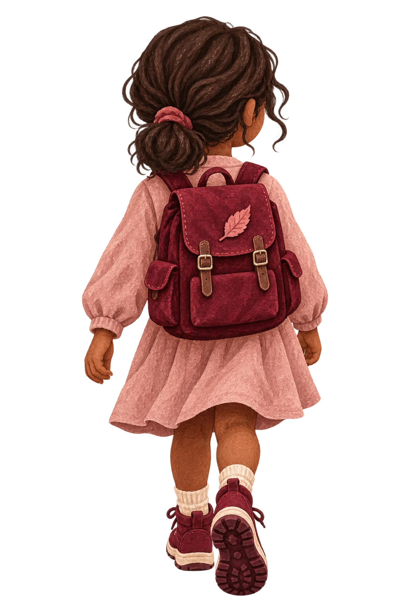

La douleurexiste.Votre vieaussi.
Doloria existe pour que la douleur ne prenne jamais toute la place.
Pour que les personnes vivant avec une douleur chronique puissent continuer à choisir, décider, faire des projets, créer des liens et prendre leur place dans le monde qui les entoure.
Vivre avec une douleur chronique
ne devrait pas signifier
mettre sa vie en pause.
La douleur ne raconte pas
toute votre histoire.
La douleur en commun.
Dix mille chemins de vie.
Vivre avec une douleur chronique ressemble rarement à une ligne droite.
On avance. Parfois, on a l’impression de reculer. Certaines expériences peuvent se ressembler, mais le vécu, les ressentis, les besoins et les ressources de chacun restent uniques.
Il n’existe pas une bonne manière d’avancer : chacun construit son chemin, à son rythme.
Moins de place pour la douleur.
Plus de place pour vivre.
Les Petits
Courageux.
Entre. Tu as ta place.
Les Petits Courageux préparent des aventures adaptées aux enfants et adolescents vivant avec une maladie chronique ou une douleur persistante.
Des séjours et des expériences pensés pour leur permettre de rencontrer d’autres jeunes, partager, découvrir, rire, essayer, se dépasser parfois… et surtout vivre une aventure qui ne tourne pas uniquement autour de la maladie.
Ici, on vient d’abord vivre quelque chose ensemble.


Il y a une place
pour chacun.
Derrière cette porte se trouvent des rencontres, des expériences et des aventures à vivre à son rythme. Que vous soyez un enfant, un adolescent, un parent ou un professionnel qui accompagne des jeunes, découvrez un projet pensé pour créer du lien et rendre les expériences accessibles.
Enseignant, éducateur, animateur, professionnel de santé, association, institution ou structure jeunesse : vous souhaitez mieux accueillir ou accompagner un enfant vivant avec une douleur ou une maladie chronique ? Doloria construit un projet d’accompagnement et souhaite réfléchir avec vous à des réponses adaptées.
Entrer dans Les Petits CourageuxEnfants & ados · Familles · Accompagnants · Structures
À chacun son entrée
Pour toi : un projet de séjours où tes envies et ton rythme ont leur place.
Pour les parents et les proches : les intentions du projet et les questions à préparer ensemble avant un séjour.
Pour les personnes qui accompagnent des jeunes : contribuer à leur place dans les activités, l’école, les loisirs et la vie collective.
Pour les structures : écoles, parascolaire, associations, institutions et structures jeunesse : échangeons sur vos besoins et vos projets.
Pour participer à la suite de cette aventure, écrivez à Doloria pour en parler.
Les histoires changent.
Le besoin d’être entendu reste.
Doloria en mouvement.
Rencontres & ateliers
Se retrouver, partager des expériences et explorer ensemble des activités adaptées au rythme de chacun.
Découvrir les ateliers et rendez-vous ↗
Ressources & sensibilisation
Des infographies et des repères pour mieux comprendre la douleur chronique et partager l’information.
Explorer les ressources ↗
Droits & démarches
Une question sur l’assurance-invalidité (AI), une demande d’aide ou une démarche administrative ? Écrivez-nous pour faire le point sur votre besoin et les possibilités d’orientation.
Nous contacter pour une démarche ↗
Recherche & innovation
Participer à l’évolution des parcours et imaginer de nouvelles manières de penser le soin. Vous avez un projet de recherche ou une proposition de collaboration ?
Échanger sur un projet ↗